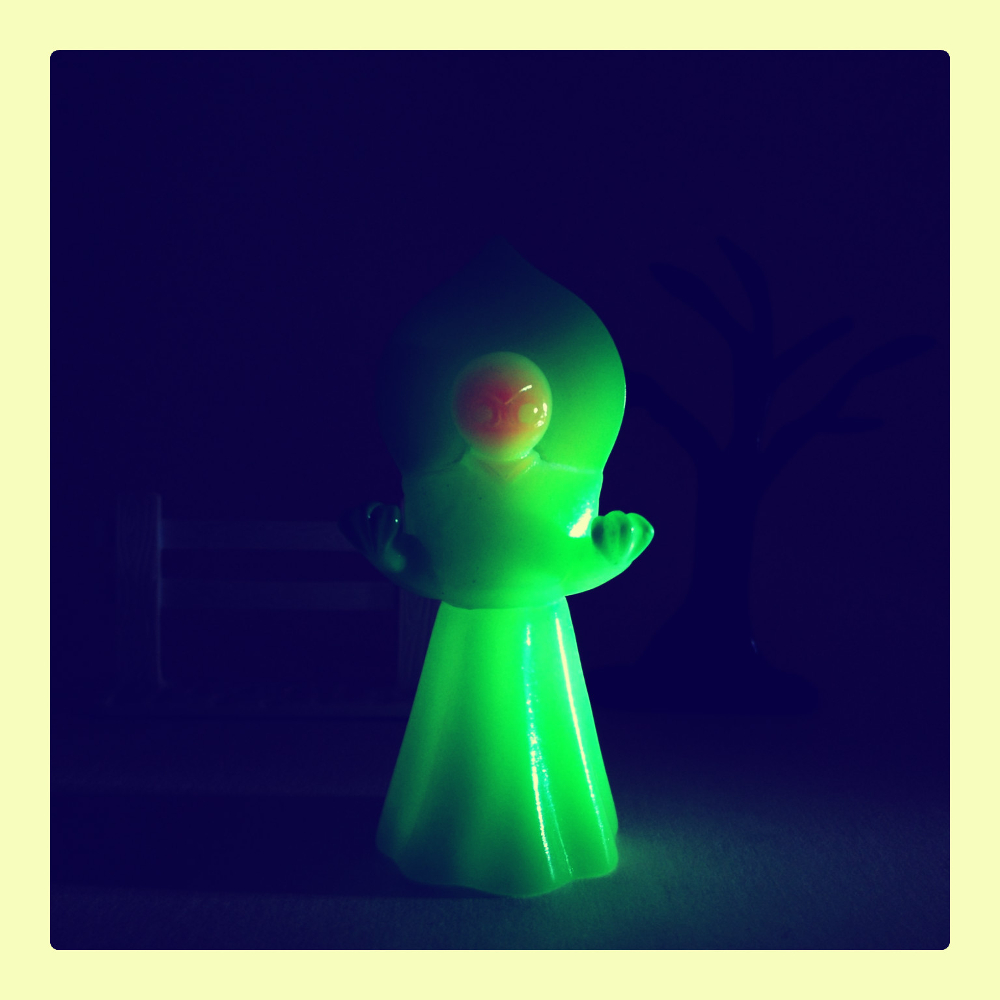
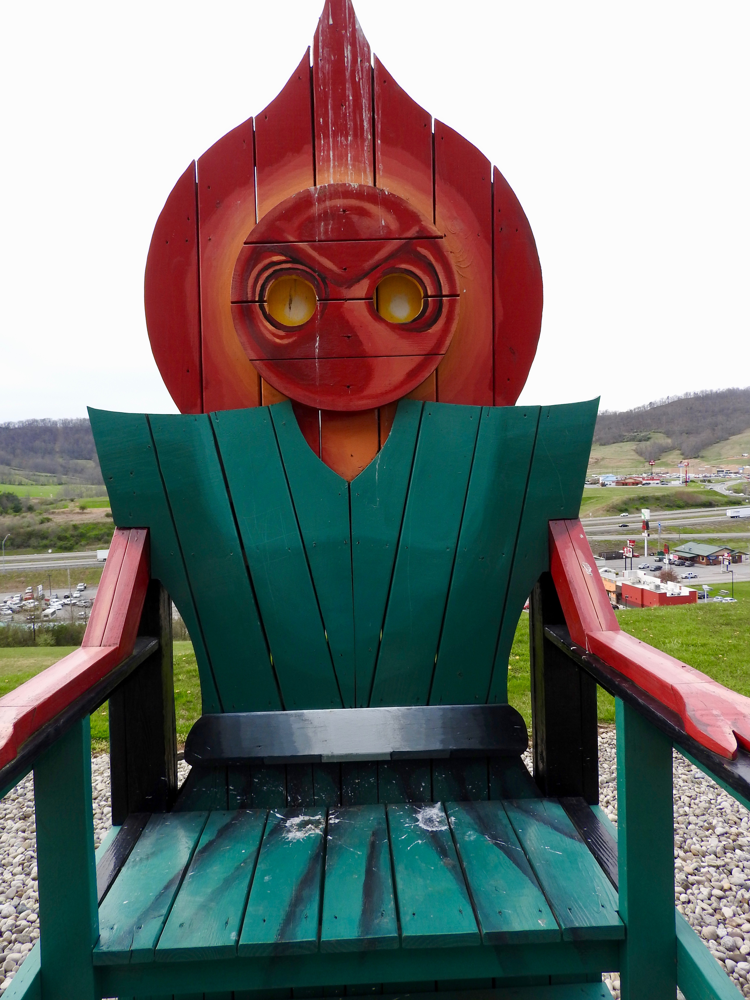

The Flatwoods Monster

"Ilanena's Flatwood Monster" by nefasth is licensed under CC PDM 1.0. To view a copy of this license, visit https://creativecommons.org/publicdomain/mark/1.0/?ref=openverse&atype=rich
The Flatwoods Monster was first spotted in Flatwoods, West Virginia on September 12th, 1952. The first sighting follows a bright object streaking across the sky at night. Upon investigating, the witnesses saw a tall, humanoid figure with a large, round, bright-red head with a hood. The figure had glowing green-orange eyes, and made a hissing noise while appearing to glide over the ground towards the witnesses, who then fled the scene. Word spread quickly, and soon the story was run in newspapers all over West Virginia.

"Flatwoods Monster" by howderfamily.com is licensed under CC BY-SA 2.0. To view a copy of this license, visit https://creativecommons.org/licenses/by-sa/2.0/?ref=openverse&atype=rich
The Flatwoods Monster was also spotted by one of our own readers: Brendan Kaylyle from Mansfield, Pennsylvania. Brendan was camping in nearby Colton Point State Park when he too saw a light flying through the sky, appearing to land just a few hundred yards beyond him, behind a thick grove of trees. Upon approaching the site, Brendan smelled smoke and sulfur and began to have smoke irritation in his eyes. Through this, he was able to make out a dark figure, about 5 feet tall, with a large red head, bright green eyes, wearing a wide, arching hooded cloak. The creature noticed Brendan's approach, hissed at him, and then darted off into the woods, seeming to glide over the surface of the ground, not making any noise despite the ground being littered with twigs.
The Flatwoods Monster has gained a cult-following to the people of West Virginia, and although many residents still fear it, some see it as a regional mark of pride.